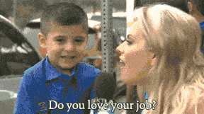

我叫姜冲
我是一名测试工程师
我的梦想是：发现Bug，定位Bug，改掉Bug
处女座
男
九 2 年
来自内蒙古赤峰市宁城县
我的家里没有草原
比较宅
没有体验过山川湖海
但我见过
中关村深夜1、2点的星星
西二旗凌晨3、4点的月亮
三里屯清晨5、6点的太阳 
我在新浪搬过砖
不过是外包（博彦科技）
我还在百度搬过砖
不过还是外包（软通动力）
除了外包
我还在区块链公司搬过砖
略懂一些数字货币
说白了就是韭菜
我还是个锤粉
不，锤友，买过很多锤科的东西
但自我感觉不是脑残粉
不然我怎么会还在用坚果Pro
可能是因为穷哈哈
大概就这些吧
非常开心加入极客邦
能测试自己喜欢的产品是一件幸事
虽然毕业两年跳槽了好几次
但这一次
准备趴这儿不走了